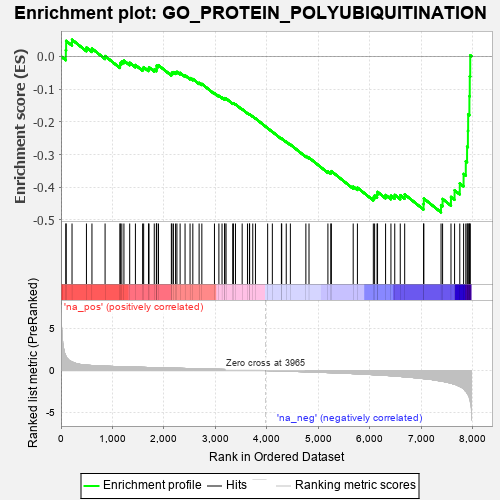

| | | Dataset | 7d |
| Phenotype | NoPhenotypeAvailable |
| Upregulated in class | na_neg |
| GeneSet | GO_PROTEIN_POLYUBIQUITINATION |
| Enrichment Score (ES) | -0.47685492 |
| Normalized Enrichment Score (NES) | -1.4827827 |
| Nominal p-value | 0.013483146 |
| FDR q-value | 0.20790158 |
| FWER p-Value | 1.0 |
Table: GSEA Results Summary

Fig 1: Enrichment plot: GO_PROTEIN_POLYUBIQUITINATION
Profile of the Running ES Score & Positions of GeneSet Members on the Rank Ordered List
| PROBE | GENE SYMBOL | GENE_TITLE | RANK IN GENE LIST | RANK METRIC SCORE | RUNNING ES | CORE ENRICHMENT | | 1 | UBE2K | | | 94 | 1.739 | 0.0189 | No |
| 2 | TRIM2 | | | 100 | 1.628 | 0.0472 | No |
| 3 | SPSB4 | | | 214 | 1.019 | 0.0509 | No |
| 4 | SPSB1 | | | 494 | 0.631 | 0.0267 | No |
| 5 | FBXW8 | | | 601 | 0.594 | 0.0238 | No |
| 6 | AMFR | | | 856 | 0.518 | 0.0008 | No |
| 7 | TPP2 | | | 1144 | 0.455 | -0.0275 | No |
| 8 | PSMD7 | | | 1152 | 0.454 | -0.0204 | No |
| 9 | PSMD2 | | | 1181 | 0.450 | -0.0159 | No |
| 10 | PPIL2 | | | 1222 | 0.443 | -0.0131 | No |
| 11 | UBR2 | | | 1334 | 0.423 | -0.0197 | No |
| 12 | RBX1 | | | 1445 | 0.401 | -0.0265 | No |
| 13 | CDC27 | | | 1585 | 0.377 | -0.0375 | No |
| 14 | RNF6 | | | 1605 | 0.373 | -0.0333 | No |
| 15 | ERCC8 | | | 1699 | 0.357 | -0.0387 | No |
| 16 | ZNRF1 | | | 1709 | 0.355 | -0.0336 | No |
| 17 | PSMD4 | | | 1811 | 0.335 | -0.0404 | No |
| 18 | TRIM5 | | | 1852 | 0.327 | -0.0397 | No |
| 19 | OTUB1 | | | 1857 | 0.326 | -0.0344 | No |
| 20 | PSMD6 | | | 1858 | 0.326 | -0.0287 | No |
| 21 | CUL3 | | | 1893 | 0.321 | -0.0273 | No |
| 22 | PSME4 | | | 2143 | 0.285 | -0.0538 | No |
| 23 | DTL | | | 2154 | 0.284 | -0.0500 | No |
| 24 | UBE2A | | | 2183 | 0.278 | -0.0486 | No |
| 25 | MYLIP | | | 2225 | 0.272 | -0.0490 | No |
| 26 | PSMF1 | | | 2251 | 0.268 | -0.0474 | No |
| 27 | UBE4B | | | 2313 | 0.258 | -0.0506 | No |
| 28 | THOP1 | | | 2409 | 0.244 | -0.0583 | No |
| 29 | HUWE1 | | | 2506 | 0.225 | -0.0665 | No |
| 30 | PSMD5 | | | 2560 | 0.218 | -0.0693 | No |
| 31 | SASH1 | | | 2682 | 0.201 | -0.0811 | No |
| 32 | CUL1 | | | 2735 | 0.193 | -0.0843 | No |
| 33 | UBE2S | | | 2980 | 0.153 | -0.1125 | No |
| 34 | RBBP6 | | | 3066 | 0.141 | -0.1208 | No |
| 35 | WWP1 | | | 3127 | 0.133 | -0.1260 | No |
| 36 | AKTIP | | | 3178 | 0.125 | -0.1301 | No |
| 37 | PSMD9 | | | 3179 | 0.125 | -0.1279 | No |
| 38 | FZR1 | | | 3205 | 0.122 | -0.1289 | No |
| 39 | CHFR | | | 3335 | 0.099 | -0.1435 | No |
| 40 | UBE2O | | | 3348 | 0.097 | -0.1433 | No |
| 41 | DDX3X | | | 3388 | 0.091 | -0.1466 | No |
| 42 | UBR5 | | | 3518 | 0.074 | -0.1617 | No |
| 43 | CBL | | | 3621 | 0.056 | -0.1736 | No |
| 44 | FBXL4 | | | 3659 | 0.049 | -0.1774 | No |
| 45 | SKP1 | | | 3663 | 0.049 | -0.1769 | No |
| 46 | CDC16 | | | 3724 | 0.038 | -0.1839 | No |
| 47 | UBE3B | | | 3776 | 0.031 | -0.1898 | No |
| 48 | RNF14 | | | 4013 | -0.010 | -0.2195 | No |
| 49 | TRAF1 | | | 4104 | -0.024 | -0.2305 | No |
| 50 | PSME3 | | | 4280 | -0.056 | -0.2517 | No |
| 51 | UBE2H | | | 4286 | -0.058 | -0.2513 | No |
| 52 | WSB1 | | | 4374 | -0.072 | -0.2611 | No |
| 53 | SYVN1 | | | 4454 | -0.085 | -0.2696 | No |
| 54 | UBE4A | | | 4755 | -0.149 | -0.3050 | No |
| 55 | FBXW7 | | | 4816 | -0.161 | -0.3097 | No |
| 56 | HDAC6 | | | 5183 | -0.244 | -0.3518 | No |
| 57 | TNKS2 | | | 5239 | -0.254 | -0.3543 | No |
| 58 | MGRN1 | | | 5250 | -0.257 | -0.3510 | No |
| 59 | PSMD1 | | | 5674 | -0.367 | -0.3981 | No |
| 60 | CDC23 | | | 5756 | -0.394 | -0.4013 | No |
| 61 | UBE3C | | | 6065 | -0.495 | -0.4316 | No |
| 62 | UBB | | | 6090 | -0.503 | -0.4257 | No |
| 63 | TNKS | | | 6138 | -0.516 | -0.4226 | No |
| 64 | RNF8 | | | 6147 | -0.518 | -0.4144 | No |
| 65 | LMO7 | | | 6303 | -0.578 | -0.4238 | No |
| 66 | UBE2N | | | 6407 | -0.621 | -0.4258 | No |
| 67 | DYSF | | | 6481 | -0.654 | -0.4235 | No |
| 68 | RNF41 | | | 6588 | -0.703 | -0.4245 | No |
| 69 | RFFL | | | 6674 | -0.749 | -0.4219 | No |
| 70 | RNF34 | | | 7040 | -0.963 | -0.4511 | No |
| 71 | FBXL5 | | | 7046 | -0.965 | -0.4346 | No |
| 72 | FBXL7 | | | 7380 | -1.245 | -0.4548 | Yes |
| 73 | UBC | | | 7410 | -1.274 | -0.4359 | Yes |
| 74 | TRAF4 | | | 7573 | -1.514 | -0.4295 | Yes |
| 75 | TAF1 | | | 7643 | -1.633 | -0.4093 | Yes |
| 76 | RNF31 | | | 7744 | -1.895 | -0.3884 | Yes |
| 77 | TRAF6 | | | 7818 | -2.157 | -0.3594 | Yes |
| 78 | TRAF2 | | | 7861 | -2.481 | -0.3207 | Yes |
| 79 | TRAF3 | | | 7886 | -2.695 | -0.2760 | Yes |
| 80 | MIB2 | | | 7902 | -2.813 | -0.2280 | Yes |
| 81 | PSMD3 | | | 7907 | -2.887 | -0.1773 | Yes |
| 82 | PSMD8 | | | 7931 | -3.286 | -0.1219 | Yes |
| 83 | TRAF5 | | | 7938 | -3.448 | -0.0615 | Yes |
| 84 | XIAP | | | 7947 | -3.696 | 0.0030 | Yes |
Table: GSEA details [plain text format]
Fig 2: GO_PROTEIN_POLYUBIQUITINATION: Random ES distribution
Gene set null distribution of ES for GO_PROTEIN_POLYUBIQUITINATION